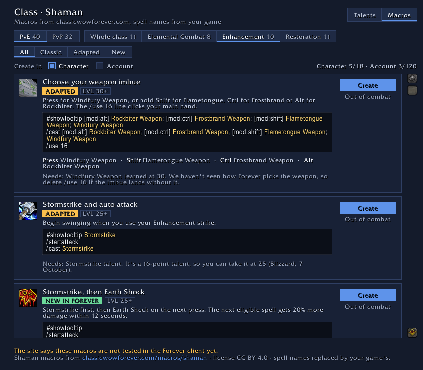

The macros of classicwowforever.com for your class, filtered by role and specialization, with spell names from your game.
One click creates the macro in your character’s or your account’s list. Each card says what the macro does, the level it needs and whether it was adapted for Forever.
